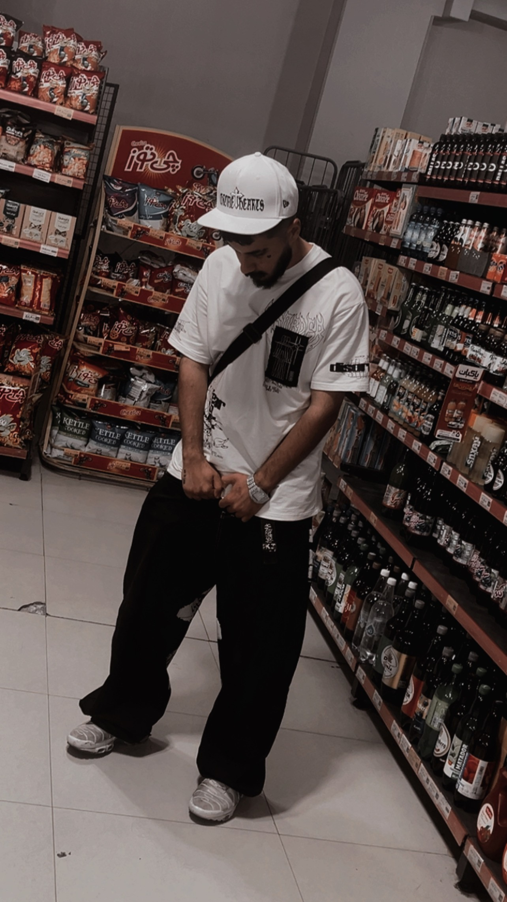
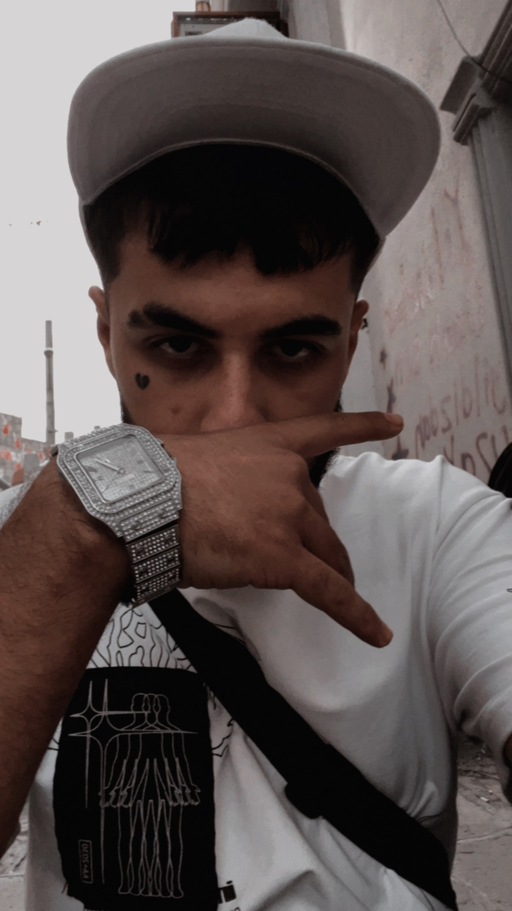
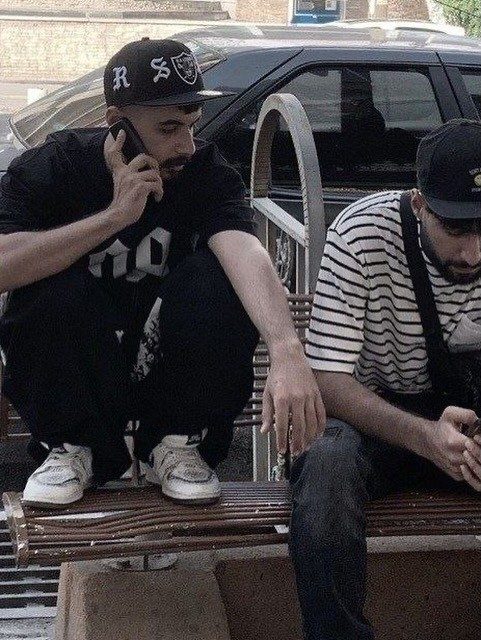
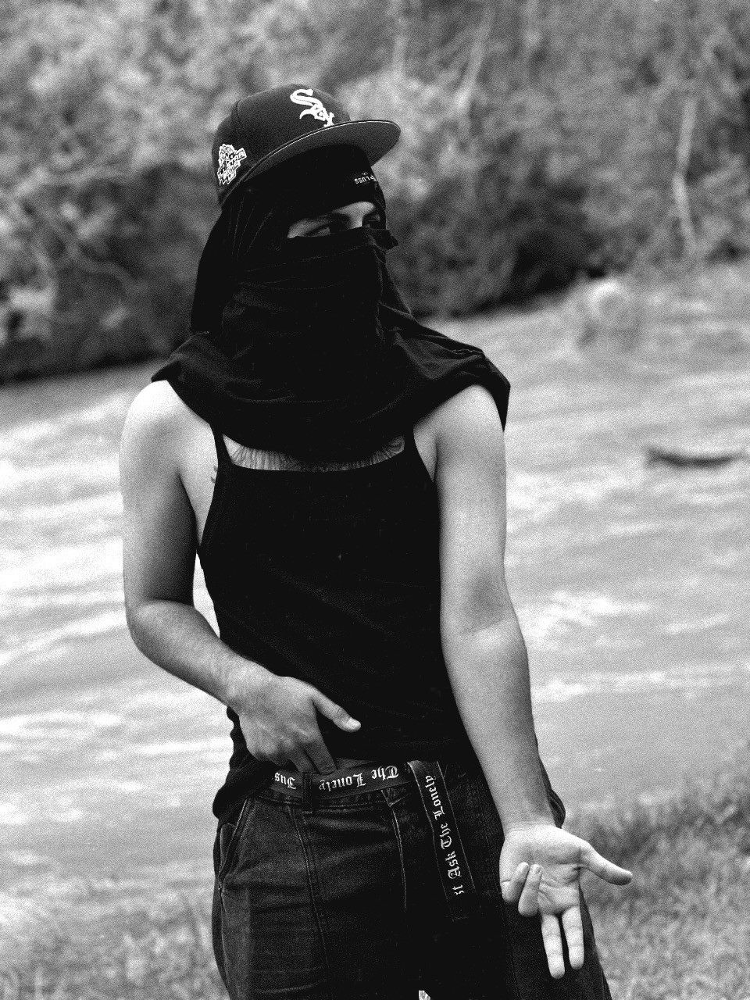
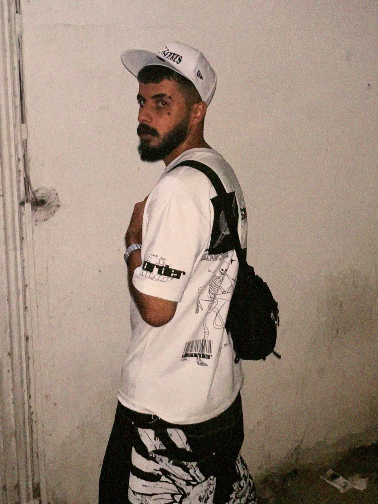
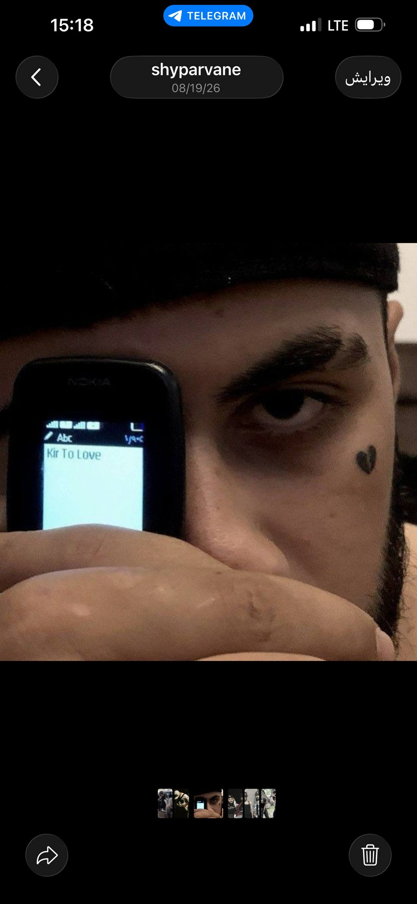
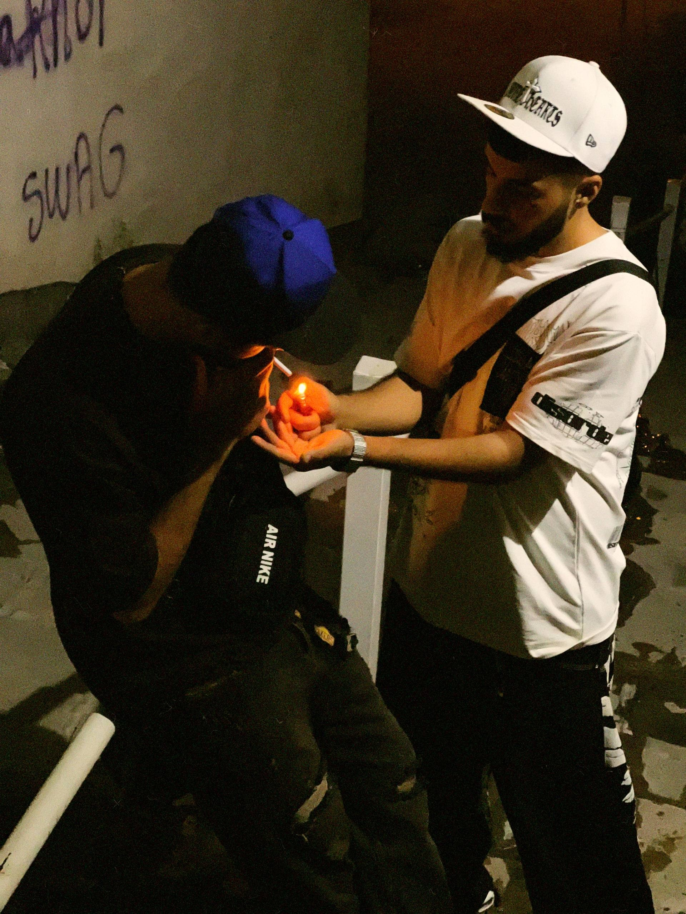
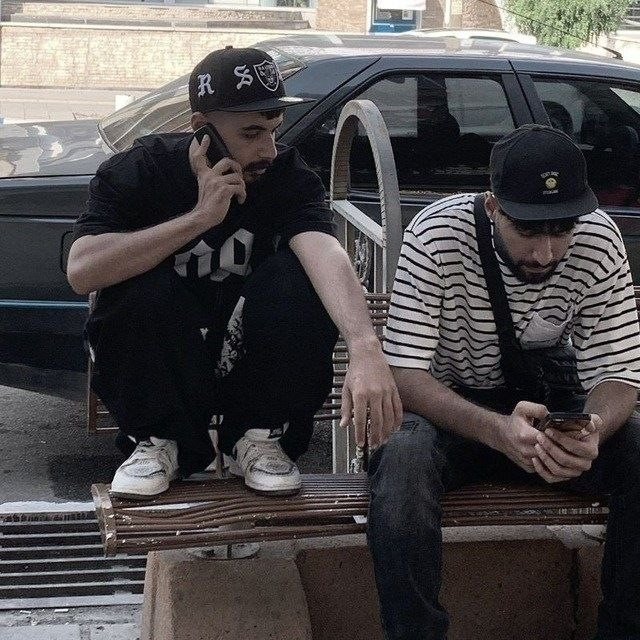

اینجا صفحه رسمی شایو پروانه است؛ جایی برای معرفی فعالیتها، موسیقی، تصاویر و مسیرهای ارتباطی رسمی.
بیشتر بدانیددرباره شایو پروانه
شایان حسینوش با نام هنری شایو پروانه، در ۲۵ شهریور ۱۳۸۴ در ارومیه متولد شد و در ایران فعالیت هنری خود را دنبال میکند.
علاقه او به موسیقی از سالهای نوجوانی شکل گرفت و در سال ۱۴۰۰ فعالیت خود را در این عرصه آغاز کرد. سبک اصلی موسیقی شایو پروانه رپ است؛ سبکی که برای او بستری برای بیان احساسات، افکار و نگاه شخصیاش به زندگی محسوب میشود.
نام هنری «شایو پروانه» نیز داستانی شخصی دارد. علاقه خاص او به پروانه و مفهوم «پروانه بودن» باعث شد افراد نزدیکش او را «پروانه» صدا بزنند. دوستانش نیز به مرور او را با نام «شایو پروانه» خطاب کردند و این نام به تدریج به نام هنری او تبدیل شد.
سال ۱۴۰۵ نقطه عطفی در مسیر هنری شایو پروانه بود؛ سالی که فعالیت موسیقی او وارد مرحلهای رسمی و جدیتر شد. در همین سال، اثر «Parvanam» منتشر شد و آغازگر دوره رسمی فعالیت هنری او بود.
شایو پروانه از آن زمان مسیر خود را در موسیقی رپ ادامه داده و تلاش میکند هویت هنری خود را بر پایه نگاه، تجربه و بیان شخصی خودش شکل دهد.
تصاویر شایو پروانه








ارتباط با شایو پروانه
برای دنبال کردن فعالیتها و آثار جدید شایو پروانه میتوانید از لینکهای رسمی این وبسایت استفاده کنید.